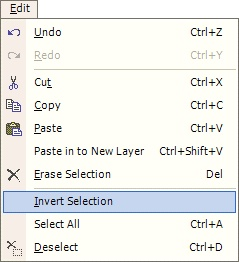
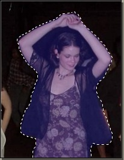
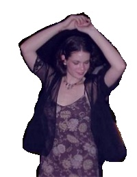

Invert Selection Operation
|  The Invert Selection Operation (Edit-->Invert Selection) allows the user to select a region using either the Rectangle Select or the Lasso Select and then 'inverting' that selection. In other words, whatever was not selected by the user becomes selected, and the user selected area becomes unselected. |
|  |
 |
| In this image, the body of the subject is selected by the user as indicated by the blue haze. | In this image, the selection was inverted, and then cut. First, the subject was selected, the invert operation was used, then the image cut. The rest of the canvas was removed leaving only the subject's body. |